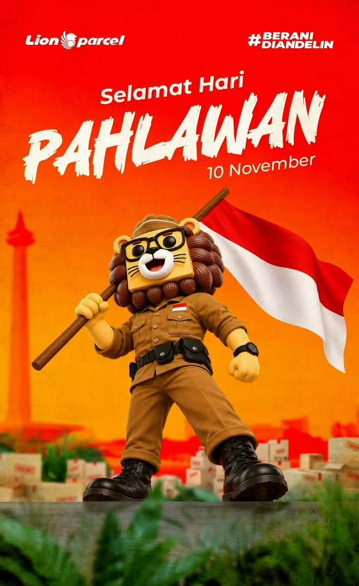

Selamat Hari Pahlawan 10 November: Mengenang Semangat Perjuangan Cicalengka

Setiap tanggal 10 November, bangsa Indonesia memperingati Hari Pahlawan sebagai bentuk penghormatan kepada para pejuang yang telah mengorbankan tenaga, pikiran, harta, bahkan nyawa demi mempertahankan kemerdekaan. Peringatan ini bukan sekadar mengenang peristiwa masa lalu, tetapi juga menjadi pengingat bahwa kemerdekaan yang kita nikmati hari ini lahir dari perjuangan panjang dan pengorbanan banyak orang.
Semangat kepahlawanan juga memiliki tempat tersendiri dalam sejarah Kabupaten Bandung, termasuk wilayah Cicalengka. Daerah ini memiliki hubungan dengan sejumlah tokoh penting dalam perjalanan bangsa Indonesia. Salah satu nama yang paling dikenal adalah Raden Dewi Sartika, tokoh pendidikan perempuan yang memiliki ikatan sejarah kuat dengan Cicalengka.
Pada Hari Pahlawan 10 November 2026 ini, mari kita mengenang jasa para pendahulu sekaligus meneladani nilai perjuangan mereka dalam kehidupan sehari-hari.
Salam Semangat untuk Warga Cicalengka dan Sekitarnya!
Lion Parcel Bandung POS101 turut mengucapkan Selamat Hari Pahlawan 10 November. Mari terus menjaga semangat kerja keras, persatuan, dan saling membantu dalam membangun lingkungan yang lebih baik.
💬 Chat WhatsApp 0851-8309-04861. Raden Dewi Sartika, Tokoh Perjuangan yang Memiliki Ikatan Sejarah dengan Cicalengka
Ketika membicarakan tokoh perempuan yang berjasa bagi bangsa Indonesia, nama Raden Dewi Sartika tidak boleh dilupakan. Ia dikenal sebagai pelopor pendidikan perempuan di tanah Sunda dan kemudian ditetapkan sebagai Pahlawan Nasional pada tahun 1966.
Dewi Sartika lahir pada 4 Desember 1884. Riwayat hidupnya memiliki hubungan erat dengan Cicalengka. Sumber dari repositori Kementerian Pendidikan menyebutkan bahwa ia menjalani pendidikan dasar di Cicalengka. Sejak masih muda, Dewi Sartika telah menunjukkan ketertarikan terhadap dunia pendidikan dan kegiatan mengajar.
Terdapat perbedaan keterangan dalam sejumlah sumber mengenai tempat kelahirannya. Sebagian sumber menyebut Bandung, sedangkan sejumlah tulisan sejarah lokal mengaitkannya dengan Cicalengka sebagai tempat kelahiran. Karena itu, hubungan Dewi Sartika dengan Cicalengka lebih tepat dijelaskan melalui jejak kehidupannya dan masa pendidikannya di daerah ini.
Perjuangan melalui pendidikan perempuan
Salah satu jasa terbesar Dewi Sartika adalah mendirikan Sakola Istri di Bandung pada 16 Januari 1904. Sekolah tersebut memberikan kesempatan kepada perempuan untuk memperoleh pendidikan dan mempelajari berbagai keterampilan.
Pada masa itu, kesempatan perempuan untuk mengenyam pendidikan masih terbatas. Melalui sekolah yang didirikannya, Dewi Sartika menunjukkan bahwa perempuan juga berhak memperoleh pengetahuan, mengembangkan kemampuan, dan memiliki kesempatan untuk membangun masa depan.
Perjuangannya mengajarkan bahwa melawan ketidakadilan tidak selalu dilakukan dengan senjata. Pendidikan, keberanian menyampaikan gagasan, dan usaha membuka kesempatan bagi orang lain juga merupakan bentuk perjuangan yang sangat berarti.
Bagi masyarakat Cicalengka, kisah Dewi Sartika menjadi pengingat bahwa daerah ini memiliki hubungan penting dengan perjalanan tokoh perempuan yang memberikan pengaruh besar bagi pendidikan Indonesia.
📍 Lokasi Lion Parcel Bandung POS101 Nanjungmekar
Jl. Raya Barat Cicalengka RT 1 RW 1, Nanjung Mekar, Rancaekek, Kabupaten Bandung, Jawa Barat.
2. Ir. Djuanda, Tokoh Nasional yang Pernah Menempuh Pendidikan di Cicalengka
Selain Dewi Sartika, nama Ir. R. Djuanda Kartawidjaja juga memiliki hubungan sejarah dengan Cicalengka. Djuanda dikenal sebagai salah satu tokoh penting Indonesia yang pernah menjabat sebagai Perdana Menteri dan memiliki peran besar dalam sejarah pemerintahan Indonesia.
Salah satu hal menarik dari perjalanan hidupnya adalah pengalaman pendidikannya di wilayah Cicalengka. Catatan sejarah yang ditulis oleh Atep Kurnia menyebutkan bahwa Djuanda menamatkan pendidikan di Europeesche Lagere School (ELS) Cicalengka pada tahun 1924.
Djuanda kemudian melanjutkan pendidikan di Bandung. Namanya dikenal luas melalui Deklarasi Djuanda pada 13 Desember 1957, yang menjadi salah satu tonggak penting dalam perjuangan Indonesia memperjuangkan konsep negara kepulauan.
Djuanda bukan tokoh yang lahir di Cicalengka, tetapi riwayat pendidikannya menjadi salah satu jejak sejarah yang menghubungkan daerah ini dengan perjalanan tokoh nasional.
Pelajaran dari perjalanan hidup Djuanda
- Pendidikan adalah bekal perjuangan: Pengetahuan dan kemampuan dapat menjadi modal untuk memberikan kontribusi besar kepada masyarakat dan negara.
- Berpikir untuk kepentingan bangsa: Perjuangan tidak berhenti pada kepentingan pribadi, tetapi juga memikirkan masa depan negara dan masyarakat luas.
- Asal daerah bukan batas cita-cita: Seseorang dapat tumbuh dari lingkungan daerah dan kelak memberikan sumbangsih dalam skala nasional.
3. Stasiun Cicalengka dan Jejak Sejarah Perjalanan Bangsa
Cicalengka juga memiliki bangunan bersejarah yang menjadi saksi perkembangan transportasi dan perjalanan masyarakat pada masa lalu, yaitu Stasiun Cicalengka.
Stasiun ini memiliki sejarah panjang dalam perkembangan jalur kereta api di wilayah Bandung. Berdasarkan catatan sejarah perkeretaapian, Stasiun Cicalengka dibangun pada abad ke-19 dan mulai diresmikan pada September 1884.
Stasiun tersebut juga memiliki cerita yang berkaitan dengan sejumlah tokoh nasional. Dalam pemberitaan mengenai sejarah Stasiun Cicalengka, sejarawan Atep Kurnia menjelaskan kisah perjalanan Soekarno setelah ditangkap di Yogyakarta pada 1929. Dalam perjalanan menuju Bandung, Soekarno disebut pernah diturunkan di Stasiun Cicalengka sebelum melanjutkan perjalanan melalui jalur darat.
Selain kisah tersebut, stasiun ini juga memiliki hubungan dengan perjalanan pendidikan Ir. Djuanda yang menggunakan kereta untuk bepergian antara Cicalengka dan Bandung.
Kisah-kisah itu menunjukkan bahwa Cicalengka bukan hanya wilayah yang berkembang sebagai pusat aktivitas masyarakat, tetapi juga memiliki jejak dalam perjalanan sejarah transportasi dan tokoh-tokoh penting Indonesia.
4. Apakah Perjuangan Hanya Dilakukan oleh Mereka yang Mengangkat Senjata?
Hari Pahlawan sering kali mengingatkan kita kepada para pejuang yang mengangkat senjata melawan penjajah. Namun, perjuangan bangsa Indonesia sesungguhnya dilakukan melalui banyak bidang dan melibatkan berbagai lapisan masyarakat.
Ada yang berjuang di medan pertempuran, ada yang menyebarkan informasi, merawat korban perang, menyediakan kebutuhan makanan, menjaga keamanan kampung, hingga membantu perjuangan melalui pendidikan dan organisasi.
Dalam sejarah Indonesia, perjuangan mempertahankan kemerdekaan juga melibatkan peran masyarakat biasa yang namanya tidak selalu tercatat dalam buku sejarah.
Karena itu, ketika kita mengenang para pahlawan, kita juga perlu menghargai kontribusi masyarakat di berbagai daerah. Tidak semua orang harus menjadi tokoh terkenal untuk memberikan manfaat bagi bangsa dan lingkungannya.
5. Semangat Pejuang Cicalengka untuk Generasi Sekarang
Semangat perjuangan para pendahulu seharusnya tidak hanya dikenang setiap tanggal 10 November. Nilai-nilai tersebut dapat diterapkan dalam kehidupan masyarakat Cicalengka dan sekitarnya hingga sekarang.
Tantangan generasi saat ini memang berbeda dengan masa perjuangan kemerdekaan. Kita tidak lagi menghadapi penjajahan dalam bentuk yang sama seperti dahulu. Namun, masih ada banyak pekerjaan yang perlu dilakukan untuk membangun masyarakat yang lebih baik.
Beberapa bentuk perjuangan yang bisa dilakukan generasi sekarang antara lain:
- Menuntut ilmu dengan sungguh-sungguh: Pendidikan menjadi salah satu jalan untuk meningkatkan kualitas diri dan membantu kemajuan daerah.
- Mengembangkan usaha dan lapangan pekerjaan: Pelaku usaha lokal dapat ikut menggerakkan perekonomian dan membuka kesempatan bagi masyarakat sekitar.
- Menjaga persatuan dan kerukunan: Perbedaan pendapat dan latar belakang tidak seharusnya menjadi alasan untuk saling bermusuhan.
- Menjaga lingkungan: Merawat kebersihan kampung, sungai, jalan, dan fasilitas umum merupakan bentuk kepedulian terhadap masa depan daerah.
- Menghargai sejarah lokal: Mengenal tokoh, bangunan bersejarah, dan cerita masa lalu membantu generasi muda memahami identitas daerahnya.
- Membantu sesama: Gotong royong, kepedulian sosial, dan saling menolong merupakan nilai perjuangan yang tetap relevan hingga sekarang.
6. Makna Hari Pahlawan 10 November bagi Masyarakat Kabupaten Bandung
Peringatan Hari Pahlawan setiap 10 November berkaitan erat dengan peristiwa Pertempuran Surabaya tahun 1945. Peristiwa tersebut menjadi simbol keberanian rakyat Indonesia dalam mempertahankan kemerdekaan setelah Proklamasi 17 Agustus 1945.
Semangat rakyat Surabaya kemudian menjadi inspirasi bagi masyarakat di berbagai daerah untuk terus menjaga kemerdekaan dan membangun Indonesia.
Bagi masyarakat Kabupaten Bandung, termasuk Cicalengka, peringatan ini dapat menjadi kesempatan untuk kembali mengenal sejarah daerah sendiri. Kisah Dewi Sartika, perjalanan pendidikan Djuanda, serta jejak sejarah Stasiun Cicalengka merupakan bagian dari cerita yang patut dipelajari dan diwariskan.
Mengenang sejarah bukan berarti hanya melihat ke belakang. Justru dari sejarah kita bisa mengambil pelajaran untuk menghadapi masa depan dengan lebih baik.
Kesimpulan: Teruskan Semangat Perjuangan Para Pendahulu
Selamat Hari Pahlawan 10 November 2026. Sejarah mengajarkan bahwa perjuangan bangsa Indonesia dilakukan oleh banyak orang melalui berbagai cara. Raden Dewi Sartika memberikan teladan melalui perjuangan pendidikan perempuan, sementara Ir. Djuanda menunjukkan pentingnya ilmu pengetahuan dan pengabdian kepada negara.
Cicalengka memiliki hubungan sejarah dengan tokoh-tokoh tersebut serta berbagai peristiwa yang menjadi bagian dari perjalanan bangsa. Sudah sepatutnya generasi sekarang menjaga dan mengenal warisan sejarah tersebut.
Mari kita teruskan semangat para pendahulu dengan bekerja keras, belajar, menjaga persatuan, membangun usaha, membantu sesama, dan memberikan kontribusi positif bagi lingkungan.
Bangsa yang besar adalah bangsa yang menghargai jasa para pahlawannya.
Selamat Hari Pahlawan!
Salam hormat untuk para pejuang Indonesia.
Terus maju Cicalengka, terus maju Kabupaten Bandung!
- Repositori Kemendikdasmen – Tokoh Pendidikan dari Jawa Barat (memuat riwayat pendidikan Raden Dewi Sartika di Cicalengka).
- Museum Pendidikan Nasional UPI – Peranan Dewi Sartika dalam Pendidikan di Jawa Barat .
- Ayo Bandung – Raden Dewi Sartika di Cicalengka (1894–1902) .
- Ayo Bandung – Djuanda Kartawidjaja Menetap di Cicalengka .
- detikJabar – Jejak Sukarno dan Para Tokoh di Stasiun Cicalengka Bandung .
Catatan: Artikel ini merangkum sejumlah sumber sejarah. Keterangan mengenai tempat kelahiran Dewi Sartika berbeda dalam beberapa publikasi, sehingga hubungan pendidikannya dengan Cicalengka dijelaskan secara khusus.
Nama Agen: Lion Parcel Bandung POS101 Nanjungmekar Rancaekek
Jam Operasional: Senin–Minggu, 08.00–20.00 WIB
Alamat: Jl. Raya Barat Cicalengka RT 1 RW 1, Nanjung Mekar, Rancaekek, Kabupaten Bandung
WhatsApp: 0851-8309-0486